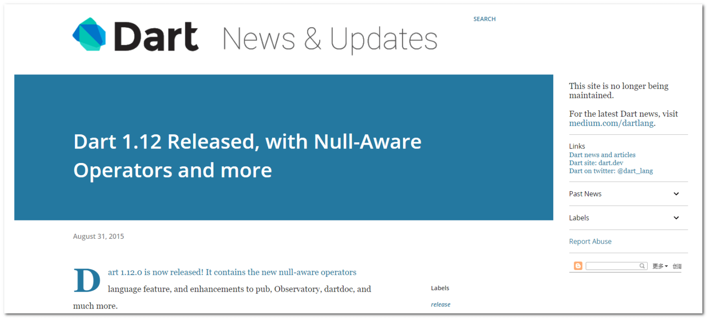

来到这篇文章, 说明你一定想在 Dart 的语法上更进一步(不出意外的话, 你在学 Flutter 🤭🤭). 工欲善其事, 必先利其器. 一个优秀的程序员应该掌握可以节省代码量的高级语法, 不论是节约时间还是提升水平. 本篇文章就来讲讲Dart语言中的 Null-aware ( null感知运算符 )吧!
背景
Dart的Null-aware来自于Dart 1.12正式版本:

你也可以看看官网版本介绍
用途
存在即是合理. 既然有这样的新运算符, 说明它在一定程度上节省了我们的代码, 使代码更加简洁.
既然它被称为Null-aware, 说明这个运算符是专门用于处理null值的. 将会提供空指针的相关操作.

创建示例对象
我们来创建一个Person对象, 方便后续使用:
class Person{
// 性别
String gender;
// 变更性别为女性
void changeToFemale(){
gender = "女性";
}
}
Person person = Person();
??
当前者为null时, 返回后者.
exp ?? anotherExp
实例: 获取用户性别
当某个Person对象的gender(性别)属性为null时, 返回’未知':
方法一: 基础IF语句
我们可以用最基础的语句来写:
String gender;
if(person.gender!=null){
gender = person.gender;
}else{
gender = '未知';
}
方法二: 三目运算
三目运算符相当好用:
String gender = person.gender!=null ? person.gender : '未知';
一行搞定, 比if爽太多.
最佳方案: ??运算符
使用刚学的??运算符处理:
String gender = person.gender ?? '未知';
简洁爆了.
??=
若obj为null, 把value赋值给obj.
obj ??= value
实例: 默认性别
若Person对象的gender属性为null, 为其赋值为"男性".
这里就不举笨方法了, 直接上:
person.gender ??= "男性";
?.
当obj不为null时, 调用method函数:
obj?.method()
实例: 变更性别
当person不为null时, 变更性别为女性:
person?.changeToFemale();
收工!
若你跟随教程一切顺利, 那么恭喜你, 你又掌握了节省寿命的新方法!
感谢
- Null-aware Operators in Dart - Jonathan White
- Dart1.12新闻
- Pexels 上的 Content Pixie 拍摄的照片
- (排名不分先后)